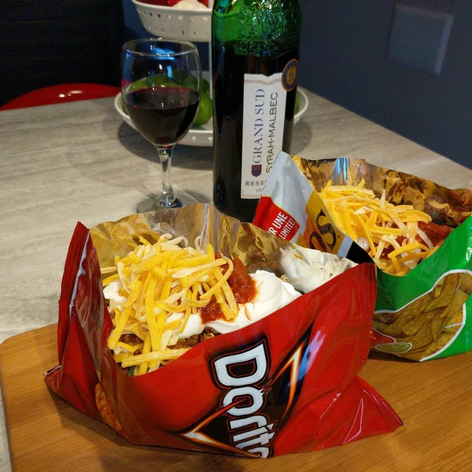

Taco in a Bag

Quick and easy meal to throw together for the whole family
Taco meat in a chip bag, with your favorite toppings...That's all there is to it.
Ingredients
- 1 pound lean ground beef
- 1 (1 ounce) package taco teasoning mix
- 4 (2.5 ounce) packages corn chips
- 2 cups shredded lettuce
- 1 chopped fresh tomato
- 1 cup shredded Cheddar cheese
- 1/3 cup salsa
- 1/2 cup sour cream
Steps
- Place ground beef in a large skillet. Cook and stir over medium heat until browned. Drain excess oil. Mix in the taco seasoning and prepare according to the directions on the package.
- With the bags unopened, gently crush the corn chips. Snip the corners off the bags using scissors and slit open the bags along the side edge. Spoon equal amounts of the beef mixture, lettuce, tomato, Cheddar cheese, salsa and sour cream into the bags on top of the crushed chips. Serve in the bag and eat using a fork.
- ENJOY!